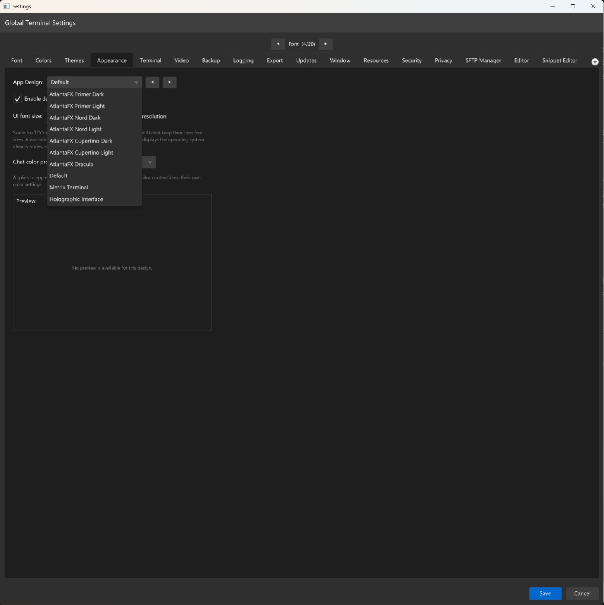
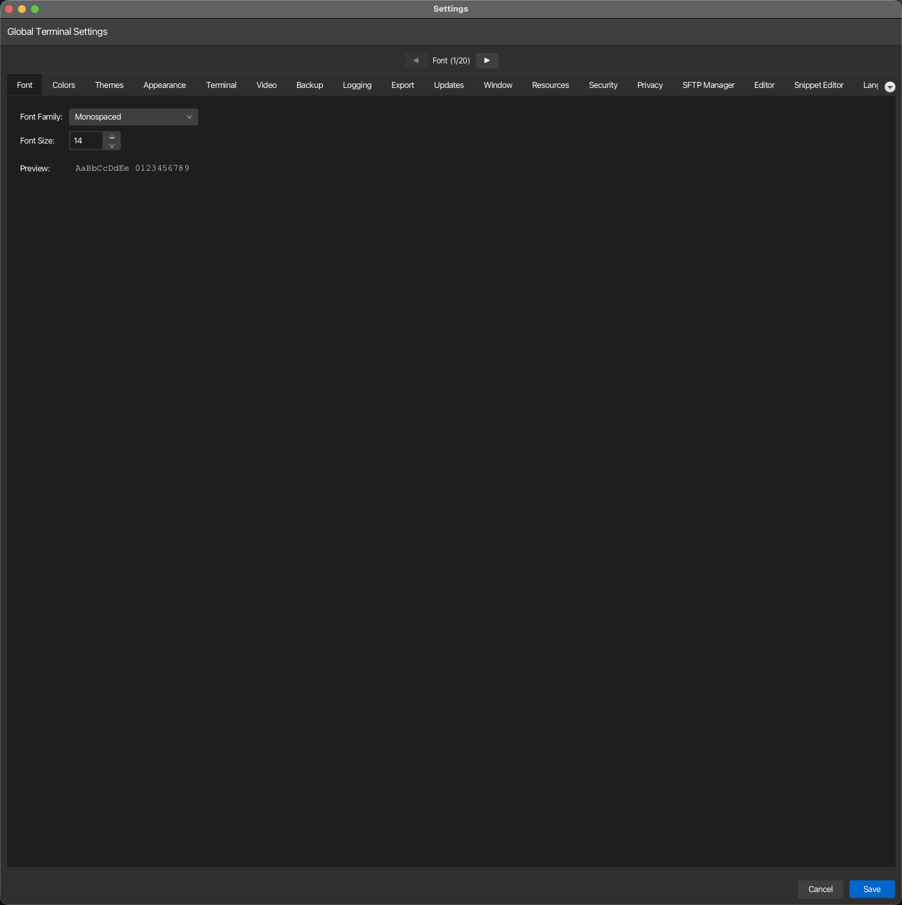
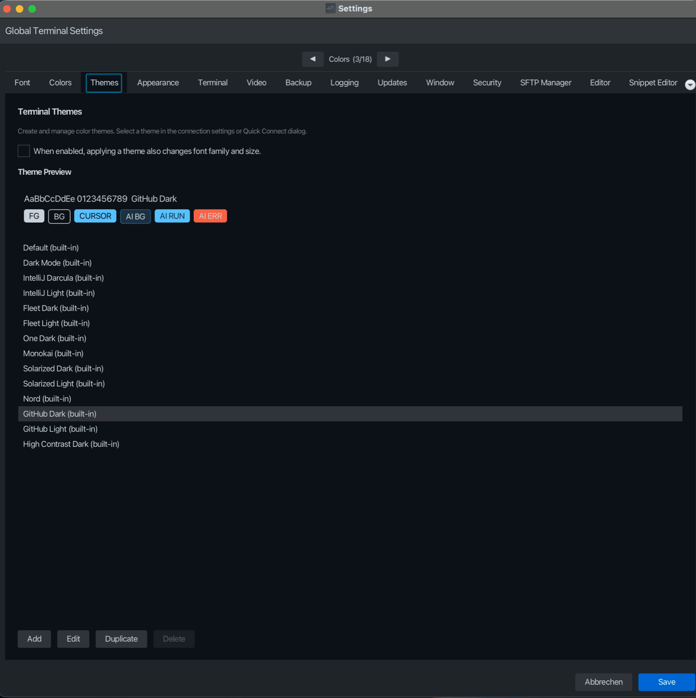

Aussehen, Themen und Schriftart¶
Die visuelle Konfiguration von korTTY umfasst drei Registerkarten: Darstellung steuert das UI-Design auf App-Ebene, Schriftart konfiguriert die Schriftart und -größe des Terminals und Themen verwaltet wiederverwendbare Terminal-Farbprofile. Alle Einstellungen bleiben bis ~/.kortty/global-settings.xml bestehen.
Registerkarte „Aussehen“.¶

Passen Sie den visuellen Stil des Anwendungsfensters und des Dialogs an.
| Einstellung | Typ | Werte | Standard | Gespeichert als |
|---|---|---|---|---|
| App Design | Dropdown | AtlantaFX Primer Dark, AtlantaFX Primer Light, AtlantaFX Nord Dark, AtlantaFX Nord Light, AtlantaFX Cupertino Dark, AtlantaFX Cupertino Light, AtlantaFX Dracula, Default, Matrix Terminal, Holographic Interface, Klingon Tactical, Elegant Dark, Amber CRT, Synthwave '84, Gruvbox Retro, Nord Arctic, Dracula | AtlantaFX Primer Dark (Neuinstallationen) | appDesign |
| Designanimationen aktivieren | umschalten | Ein, Aus | Ein | appDesignAnimationsEnabled |
| UI-Schriftgröße | Zahl | 80–160 % in 5er-Schritten | 100 % | uiFontScalePercent |
| An Bildschirmauflösung anpassen | umschalten | Ein, Aus | Ein (Neuinstallation) | uiFontScaleAuto |
| Chat-Farbprofil | Dropdown-Liste | Automatisch (Thema), Original, Papier, Mitternacht, Cyberpunk, Retrowave, Wald, Ozean, Terminal, GPT, Niedlich | Automatisch (Thema) | chatColorProfileId |
Mit den Schaltflächen ◀ und ▶ neben dem Dropdown-Menü können Sie durch die Designs vor- und zurückblättern (an den Enden umlaufend). Wenn ein anderes Design als Standard ausgewählt wird, wird unterhalb der Steuerelemente ein Vorschaubild dieses Designs angezeigt. Das Standarddesign hat keine Vorschau und zeigt stattdessen eine kurze Notiz an.
Designanimationen aktivieren fungiert gleichzeitig als Schalter zur Bewegungsreduzierung: Wenn Sie ihn ausschalten, werden die animierten Designeffekte gestoppt, während die Farben an Ort und Stelle bleiben.
Die sieben AtlantaFX-Einträge wenden das User-Agent-Design Primer Dark, Primer Light, Nord Dark, Nord Light, Cupertino Dark, Cupertino Light oder Dracula von AtlantaFX 2.1.0 auf native JavaFX-Steuerelemente an, mit einem kleinen korTTY-Overlay für das Hauptfenster-Chrome und korTTY-spezifischen Steuerelementen. Sie werden oben im Dropdown-Menü gruppiert und eine Neuinstallation beginnt mit AtlantaFX Primer Dark. Vorhandene Einstellungen werden nicht migriert: Eine vorhandene Standardauswahl bleibt Standard. Wenn Sie auf „Standard“ oder ein älteres korTTY-Design wechseln, wird JavaFX Modena wiederhergestellt, bevor das Stylesheet dieses Designs angewendet wird. Die Änderung ist in allen geöffneten Fenstern, Dialogen, Menüs, Tooltips und Abschluss-Popups wirksam.
Chat-Farbprofil thematisiert die KI-Chat- und Schwarmoberflächen. Das standardmäßige Automatic (Theme) leitet seine Palette von den Agent-Panel-Farben des aktiven Terminal-Themes ab; Die anderen Profile sind feste Paletten.
Note
App Design gilt nur für die Anwendungsfenster und Dialoge von korTTY. Terminalsitzungen, der Monaco-Dateieditor, Sitzungsjournalseiten und KI-Chatinhalte behalten ihre eigenen unabhängigen Farbeinstellungen (konfiguriert über die Registerkarten „Farben“ oder „Themen“ oder ihre eigenen Steuerelemente für das Erscheinungsbild).
UI-Schriftgröße¶
UI-Schriftgröße skaliert die eigene Benutzeroberfläche von korTTY – die Menüleiste und ihre Dropdowns, Dialoge, Formularbeschriftungen, Schaltflächen, Registerkartentitel, das Dashboard, den Dateibrowser und die Statusleiste. Es wird in dem Moment wirksam, in dem Sie speichern. Es ist kein Neustart erforderlich und die Größe bereits geöffneter Fenster ändert sich damit. Die Größe des Hauptfensters beim ersten Start wächst mit, und Dialoge, die sich ihre Größe merken, werden nach einer Änderung neu gemessen, anstatt in einer Größe erneut geöffnet zu werden, die nicht mehr zu ihrem Text passt.
Es berührt bewusst keine Oberflächen, die bereits über eine eigene Größenkontrolle verfügen, sodass die beiden nie gegeneinander antreten:
| Oberfläche | Wo ihre Größe stattdessen eingestellt wird |
|---|---|
| Terminalsitzungen | Der Tab Schrift sowie die Zoom-Verknüpfungen des Menüs „Ansicht“ |
| Dateieditor | Der Tab Editor |
| KI-Chat-, Agentenplan- und Aktivitätspanels | Ihre eigenen A- / A+-Schaltflächen |
| Die Anleitung (Hilfe → Anleitung) | Der A- / A+ Schaltflächen in einem eigenen Fenster – siehe unten |
| Sitzungsjournalseite | Das Popover für das Erscheinungsbild des Journalbetrachters |
Zwei weitere Teile der Benutzeroberfläche behalten bei jeder Einstellung ihre Größe: das macOS-Anwendungsmenü (das in der Systemmenüleiste), da macOS es anstelle von korTTY zeichnet, und der KI-Schwarm-Statusstreifen, dessen Beschriftungen zusammen mit handberechneten Positionen auf einen Canvas gezeichnet werden.
An Bildschirmauflösung anpassen leitet die Größe stattdessen von der primären Anzeige ab und deaktiviert das Zahlenfeld, solange es aktiviert ist. Eine Neuinstallation beginnt damit, dass es eingeschaltet ist, sodass sich korTTY an den Bildschirm anpasst, bevor jemand diese Registerkarte besucht; Das Aktualisieren einer vorhandenen Installation ändert nie etwas daran – alles, was Sie hatten, bleibt bestehen. Der Wert ergibt sich aus der logischen Höhe der Anzeige – der Auflösung, die das Betriebssystem nach seiner eigenen Skalierung meldet:
| Logische Bildschirmhöhe | UI-Schriftgröße |
|---|---|
| Unter 1400 px | 100 % |
| 1400–1799 px | 110 % |
| 1800–2299 px | 125 % |
| 2300 px und höher | 140 % |
Aus diesem Grund bleibt ein Retina MacBook bei 100 %: macOS skaliert es bereits, sodass es etwa 1100 logische Pixel meldet und keine Hilfe benötigt. Die Option besteht für einen 4K- oder 5K-Bildschirm mit 100 % Betriebssystemskalierung, wobei korTTY tatsächlich die vollen 2160 oder 2880 Pixel zum Zeichnen erhält.
Note
„Automatisch“ ist ein Vorschlag, keine Messung. JavaFX kann die physische Größe eines Displays nicht melden, daher kann korTTY ein 27-Zoll-4K-Panel nicht von einem 32-Zoll-Panel mit derselben Auflösung unterscheiden, obwohl sie unterschiedliche Größen benötigen. Wenn Ihnen das Ergebnis nicht zusagt, schalten Sie die Option aus und legen Sie den Prozentsatz selbst fest – Ihr manueller Wert wird gespeichert, während die automatische Einstellung aktiviert ist.
Die Automatik erreicht die Höchstgrenze bei 140 %, die manuelle Einstellung bei 160 %. Die Obergrenze ist absichtlich festgelegt: Eine Handvoll Dialoge richten sich nach festen Pixelbreiten, und jenseits dieses Punktes beginnt der Text zu drängen. korTTY liest die Anzeige erneut, wenn Sie die Einstellungen speichern. Öffnen Sie also nach dem Ändern Ihrer Monitoreinstellungen die Einstellungen und speichern Sie sie erneut (oder starten Sie neu), um die neue Auflösung zu übernehmen.
Textgröße der Anleitung¶
Die Anleitung (Hilfe → Anleitung, F1) hat eine eigene Textgröße. Drei Schaltflächen oben links im Fenster steuern es: A-, der aktuelle Prozentsatz und A+. Der Prozentsatz ist auch die Rücksetzsteuerung. Klicken Sie darauf, um zu 100 % zurückzukehren. Für alle drei gibt es Tastaturkürzel: Cmd++, Cmd+-, Cmd+0. Unter Windows und Linux sind dies Ctrl++, Ctrl+-, Ctrl+0. Sie werden im eigenen Fenster der Anleitung registriert, sodass sie niemals mit dem Terminalzoom im Hauptfenster kollidieren.
Der Bereich beträgt 70–250 % in 10er-Schritten und ist breiter als die Schnittstelleneinstellung, da es sich bei der Anleitung um ein umfließendes Dokument und nicht um ein Layout mit festen Breiten handelt. Die Größe wird bei Neustarts gespeichert, gilt auch für die KI-Suchantworten neben der Anleitung und bleibt beim Navigieren zwischen den Seiten erhalten. Es skaliert die Seite als Ganzes – Text, Bilder und Diagramme zusammen – so, wie es der Zoom eines Browsers tut.
Note
Dies ist unabhängig von der UI-Schriftgröße oben, die die Schaltflächen und das Fensterchrom um die Anleitung regelt. Wenn die Symbolleiste der Anleitungs zu klein erscheint, müssen Sie diese Einstellung ändern.
Registerkarte „Schriftart“.¶

Legen Sie die Schriftart und -größe des Terminals und Editors fest.
| Einstellung | Typ | Werte | Standard | Gespeichert als |
|---|---|---|---|---|
| Schriftartenfamilie | Dropdown-Liste | Gängige Festbreitenschriften (Monaco, Courier New, Menlo, Fira Code usw.) und alle Systemschriftarten | Monospaced | defaultTerminalSettings.fontFamily |
| Schriftgröße | Nummer | 8–72 pt | 14 | defaultTerminalSettings.fontSize |
Note
Auf der Registerkarte „Schriftart“ werden globale Standardeinstellungen für alle neuen Terminalverbindungen festgelegt. Einzelne Verbindungen können diese Werte über ihre eigenen Verbindungseinstellungen überschreiben. Während Sie die Steuerelemente anpassen, wird eine Live-Vorschau angezeigt.
Registerkarte „Themen“.¶

Erstellen, bearbeiten und verwalten Sie Terminal-Farbthemen. Themen definieren Farben (Text, Hintergrund, Cursor, ANSI) und Stil für alle Terminalsitzungen.
Themenverwaltung¶
| Aktion | Beschreibung |
|---|---|
| Hinzufügen | Erstellen Sie ein neues benutzerdefiniertes Farbthema |
| Bearbeiten | Das ausgewählte Thema ändern. Die Schaltfläche bleibt für integrierte Designs aktiviert, führt aber beim Klicken nichts aus – duplizieren Sie zuerst das Design |
| Duplizieren | Kopieren Sie das ausgewählte Design als neues benutzerdefiniertes Design |
| Löschen | Entfernen Sie ein benutzerdefiniertes Design (integrierte Designs können nicht gelöscht werden) |
Theme-Optionen¶
| Einstellung | Typ | Standard | Gespeichert als |
|---|---|---|---|
| Wenn diese Option aktiviert ist, ändert sich beim Anwenden eines Designs auch die Schriftfamilie und -größe. | umschalten | Aus | applyThemeFonts |
Note
Wenn diese Option aktiviert ist, wird bei der Auswahl eines Themas aus der Dropdown-Liste „Farbprofil“ der Registerkarte „Farben“ auch die Schriftfamilie und -größe dieses Themas angewendet. Wenn die Option deaktiviert ist, werden nur die Farben des Themas angewendet.
Eingebaute vs. benutzerdefinierte Designs¶
korTTY enthält eine Reihe integrierter Farbthemen (z. B. Standard, Dunkelmodus, Solarisiertes Licht). Integrierte und benutzerdefinierte Designs werden zusammen in einer einzigen Datei, ~/.kortty/themes.xml, gespeichert. Alle Themen werden in der Farbprofilauswahl der Registerkarte „Farben“ und in verbindungsspezifischen Themen-Dropdown-Menüs angezeigt.
Warning
Integrierte Designs können nicht bearbeitet oder gelöscht werden. Um ein integriertes Design zu ändern, duplizieren Sie es zunächst und bearbeiten Sie dann die benutzerdefinierte Kopie.
Theme-Vorschau¶
Eine Live-Theme-Vorschau zeigt die Farben des Themes an. Die Vorschau zeigt sechs Farbfelder – Vordergrund, Hintergrund und Cursor sowie die Hintergrund-, Ausführungs- und Fehlerfarben des AI-Agent-Panels – sodass Sie ein Design bewerten können, bevor Sie es anwenden.
Cross-Tab-Integration¶
- Registerkarte „Farben“: Wählen Sie über das Dropdown-Menü „Farbprofil“ ein Thema aus. Wenn die Schriftartoption der Registerkarte „Themen“ aktiviert ist, wird auch die Schriftart des ausgewählten Designs angewendet.
- Verbindungseinstellungen: Jede einzelne SSH-Verbindung kann die globale Schriftart und das globale Design über ihre eigenen Einstellungen überschreiben (zugänglich im Verbindungsmanager oder in der Schnellverbindung).
- Terminal-Emulation: Schrift- und Designfarben wirken sich nur auf den Terminalinhalt aus; Der Stil der Anwendungsoberfläche (Menüleiste, Dialoge, Registerkarten) wird durch die App-Designeinstellung der Registerkarte „Darstellung“ bestimmt.